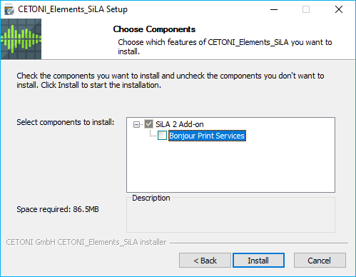
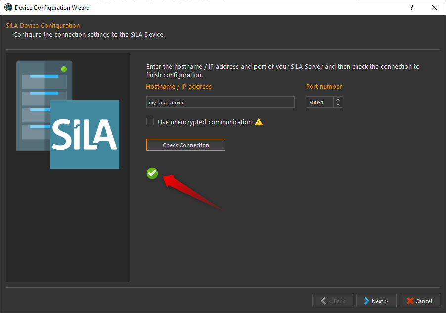
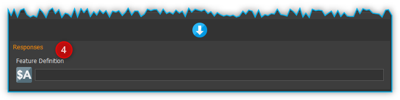
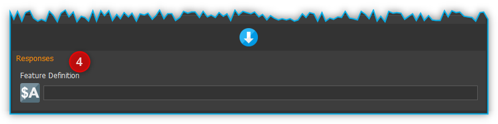
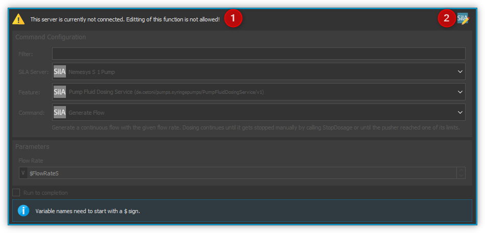
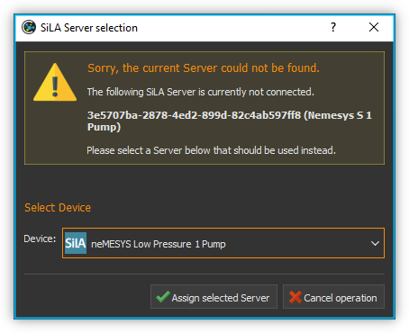

SiLA 2 Add-on
Einführung in das SiLA 2 Add-on
Mit Hilfe des SiLA-Add-ons können Sie jedes SiLA-Gerät in die CETONI Elements-Software integrieren. Eine generische, dynamisch generierte Schnittstelle ermöglicht Ihnen den manuellen Zugriff auf alle SiLA-Funktionen, -Befehle und -Eigenschaften eines beliebigen SiLA-Geräts. Mit Hilfe verschiedener Skriptfunktionen können Sie Ihre SiLA-Geräte automatisieren und in CETONI Elements-Skripte integrieren.
Installation
Das SiLA 2 Add-on ist nicht im Standard CETONI Elements Installationspaket enthalten, sondern muss als Add-on zusätzlich installiert werden. Die Versionen von SiLA 2 Plugin und installierter CETONI Elements Software sollten übereinstimmen. Wenn Sie z.B. das SiLA 2 Plugin mit der Versionsnummer 20210707 installieren möchten, sollte die CETONI Elements Software mit der Versionsnummer 20210707 installiert sein.
Wichtig
Die Versionsnummer der CETONI Elements Software und des SiLA 2 Add-ons sollten übereinstimmen. Die Version des SiLA 2 Add-ons darf nie größer sein, als die Version der CETONI Elements Software. Je größer die Differenz zwischen der Versionsnummern ist, umso größer ist die Wahrscheinlichkeit dass Probleme oder Fehler auftreten.
Bitte schließen Sie vor der Installation alle anderen Programme.
Starten Sie zur Installation die Datei
CETONI_Elements_SiLA_64bit_Setup.exe. Der Installationsassistent
führt Sie anschließend durch die Installation der Software- und
Hardware-Treiber.
Während der Installation werden die Bonjour Print Services installiert, die für das automatische Discovery von SiLA Servern im Netzwerk nötig sind. Dieser Schritt ist nur notwendig, wenn die Bonjour Services auf Ihrem Rechner noch nicht installiert wurden. Sind sie bereits installiert, deaktivieren Sie bitte die entsprechende Komponente (siehe Abbildung unten).
Wichtig
Unter Windows müssen Sie mit Administratorrechten angemeldet sein, um die Installation der Hardware-Treiber durchführen zu können.
Grundlagen von SiLA 2
SiLA 2 (Standardization in Lab Automation) ist ein Kommunikationsstandard für Labor-Geräte. Das primäre Ziel von SiLA ist es, einen internationalen, offenen Konnektivitätsstandard in der Laborautomatisierung zu schaffen über den Geräte unterschiedlicher Hersteller miteinander in einer Anwendung kommunizieren können.
Client-Server Konzept
Die Kommunikation basiert auf einem Client-Server-Prinzip und verwendet etablierte Netzwerkstandards. Ein SiLA-Server wird üblicherweise von einem Gerät bereitgestellt während ein SiLA-Client üblicherweise eine Steuerungssoftware (z.B. ein LIMS oder CETONI Elements) ist. Da ein SiLA-Server in den meisten Fällen ein Gerät repräsentiert, werden die Begriffe SiLA-Server (oder nur Server) und Gerät im Folgenden synonym verwendet.

Jeder SiLA Server hat eine bestimmte Anzahl von Features implementiert. Die SiLA-Features sind eine Schlüsselkomponente des SiLA-2-Standards, da sie die Interaktion zwischen dem SiLA-Client und dem SiLA-Server definieren. Jedes einzelne Feature beschreibt einen bestimmten Aspekt des Gesamtverhaltens des Servers.
Die Merkmale eines Geräts (d. h. eines SiLA-Servers) werden in einer XML-Datei beschrieben, in der die Funktionalität beschrieben wird:
Properties (Eigenschaften): Datenwerte, die statisch (z. B. Seriennummer) oder dynamisch (z. B. aktuelle Temperatur) sein können
Commands (Befehle): eine Interaktion zur Steuerung oder Übermittlung von Informationen an/von SiLA, eine Aktion, die von einem SiLA-Server ausgeführt werden kann
Parameters (Parameter): erwartete Informationen, die zur Ausführung des Befehls erforderlich sind
Return values (Rückgabewerte): erwartete Ausgabe des Befehls
Errors (Fehler): erwartete Fehler, die während des Vorgangs auftreten können

Commands und Properties
Properties und Commands können sowohl Unobservable als auch Observable sein.
Unobservable Properties sind statische Daten eines Servers, die sich während der Laufzeit eines Servers nicht ändern (z.B. die Anzahl möglicher Schaltstellungen eines Ventils).
Observable Properties sind dynamische Daten eines Servers, die sich während der Laufzeit eines Servers ändern können und über deren Änderung Clients informiert werden sollen (z. B. die aktuelle Flussrate einer Spritzenpumpe). Observable Properties können von einem Client abonniert werden, sodass dieser über alle Änderungen der Property informiert wird.
Unobservable Commands sind Aktionen, die auf einem Gerät ausgeführt werden können und die nur sehr wenig Zeit in Anspruch nehmen (z. B. zum Ändern von Einstellungen wie den Spritzenparametern einer Pumpe).
Observable Commands sind Aktionen, die potentiell längere Zeit für die Ausführung auf dem Gerät in Anspruch nehmen können (z. B. eine Fluid-Dosierung). Hierbei kann ein Client die sogenannte Execution Info abonnieren, um über den Fortschritt der Command-Ausführung benachrichtigt zu werden.
Tipp
Eine umfassende Einführung in den SiLA-Standard finden Sie auf der SiLA-Homepage: https://sila-standard.com/standards/ oder in diesem Blogbeitrag.
Aktivieren des SiLA 2 Plugins
Das SiLA 2 Plugin wird nicht automatisch geladen, nachdem das AddOn installiert wurde. Um das Plugin zu aktivieren, müssen Sie Ihre Gerätekonfiguration ändern oder eine neue erstellen.
In der Geräteliste des Gerätekonfigurators gibt es zwei neue Geräte, die mit dem SiLA-Plugin verfügbar sind: Der „Generic SiLA Client“ und das „SiLA Device“.

„Generic SiLA Client“

Dieses „Gerät“ aktiviert die Unterstützung für die generische SiLA Client UI (siehe Abschnitt Überblick über die generische Oberfläche) und ist daher nur einmal in einer Gerätekonfiguration erlaubt.
„SiLA Device“

Mit diesem Gerät können Sie eine beliebige Anzahl von SiLA 2 Servern statisch konfigurieren, die immer in Ihrer Gerätekonfiguration vorhanden sein sollten. Ziehen Sie einfach die gewünschte Anzahl von SiLA Devices aus der Geräteliste in den Konfigurationsbereich und konfigurieren Sie die Verbindung zu den Servern.
Um das Gerät zu konfigurieren, geben Sie die IP-Adresse oder den Hostnamen des SiLA-Servers und den Port ein, auf dem der Server läuft. Bei Bedarf können Sie auch eine unsichere (unverschlüsselte) Kommunikation zum Server erzwingen. Klicken Sie dann auf die Schaltfläche Check Connection. Wenn die Verbindung zum Server hergestellt werden konnte, sehen Sie ein grünes Häkchen.
Achtung
Unverschlüsselte Kommunikation sollte nur zu Testzwecken verwendet werden, aber nicht in einer Produktionsumgebung!
SiLA UI Übersicht
Durch Anklicken der Schaltfläche SiLA 2 und anschließend Server Overview ❶ in der Seitenleiste wechseln Sie zum SiLA 2 Plugin (siehe Abbildung unten).
Schaltfläche SiLA 2 zur Anzeige von Server Overview und verbundene SiLA 2 Server
Schaltfläche zum Durchführen eines Netzwerk-Scans, um verfügbare SiLA 2 Server zu finden
Schaltfläche zum Herstellen einer Verbindung zu allen Servern in der Liste
Anzeige aller im Netzwerk gefundenen oder manuell hinzugefügten SiLA 2 Server
Schaltfläche zum manuellen Hinzufügen eines SiLA 2 Servers
Anzeige, ob die Verbindung zum SiLA 2 Server verschlüsselt oder unverschlüsselt ist
Schaltfläche zum Herstellen oder Auflösen einer Verbindung zu einem SiLA 2 Server
Schaltfläche zum Löschen des Servers aus der Liste
Mit der Schaltfläche ❶ bzw. den Karteireitern können Sie zwischen den aktuell verbundenen SiLA 2 Servern und dem Server Overview wechseln. Für jeden Server wird ein Reiter angelegt.
Verbinden zu einem SiLA 2 Server
Verbinden zu automatisch gefundenen Servern
Um sich mit einem SiLA 2 Server zu verbinden, der über das SiLA Server Discovery im lokalen Netzwerk gefunden wurde, klicken Sie einfach auf das Connect-Icon ❶ in der entsprechenden Zeile im Server Overview.
Nachdem die Verbindung erfolgreich hergestellt wurde, erscheint anstelle des Connect-Icons das Disconnect-Icon ❷. Durch klicken auf dieses Icon können Sie die Verbindung zu diesem Gerät wieder trennen.

Tipp
{kind=link}
Über die Schaltfläche Connect-To-All ❸ können Sie sich gleichzeitig mit allen Geräten verbinden und müssen sich nicht zu jedem Gerät einzeln verbinden.
Tipp
{kind=link}
Sollte die Software eines oder mehrere Ihrer SiLA-Geräte nicht gefunden haben, kann es helfen, die Server neu zu starten und einen erneuten Netzwerk-Scan ❹ durchzuführen.
Tipp
Wenn Sie die Software schließen, während Sie noch zu einem oder mehreren SiLA-Servern verbunden sind, wird versucht, diese Verbindungen beim nächsten Start der Software wiederherzustellen.
Wichtig
Wenn Sie einen Server mit einer aktiven Verbindung zur Software aus der Server Overview Liste löschen, dann wird die Verbindung automatisch getrennt.
Normalerweise ist die Kommunikation zwischen SiLA-Server und -Client verschlüsselt. Wenn Sie versuchen, eine Verbindung zu einem Server herzustellen, der keine Verschlüsselung anbietet, erscheint ein Dialog, der Sie warnt, dass eine unsichere Verbindung zum Server hergestellt wird. Wenn Sie sicher sind, dass Sie eine Verbindung zum Server herstellen wollen, wählen Sie Yes, um die Verbindung zum Server ohne Verschlüsselung herzustellen.
Achtung
Sie sollten niemals eine unverschlüsselte Verbindung zu einem Gerät herstellen, dass sich außerhalb Ihres lokalen Netzwerks befindet, da sonst die gesamte Kommunikation zwischen dem Gerät und der Software von Dritten mitgelesen werden kann.
Manuelles Hinzufügen und Verbinden zu einem Server

Sollte ein Server in Ihrem lokalen Netzwerk nicht automatisch gefunden werden, oder wollen Sie sich zu einem Server außerhalb Ihres lokalen Netzwerks verbinden, müssen Sie diesen Server manuell hinzufügen. Klicken Sie dafür auf die Schaltfläche Add server ❻ (siehe Abbildung oben). Es erscheint das folgende Dialogfenster.

Geben Sie hier entweder den Hostnamen oder die IP-Adresse Ihres Geräts sowie den Port ein, auf dem der SiLA Server läuft. Außerdem haben Sie die Möglichkeit, eine unverschlüsselte Kommunikation mit dem Server zu erzwingen. Klicken Sie dann auf Connect.
Die Software wird nun versuchen, sich zu diesem Server zu verbinden. Ist dies erfolgreich erscheint der Server in der Server Overview Liste. Sollte die Verbindung nicht hergestellt werden können, finden Sie im Event Log eine Fehlermeldung mit Hinweisen, warum die Verbindung fehlgeschlagen ist.
Nicht vertrauenswürdige Zertifikate akzeptieren
Zur Verschlüsselung der Kommunikation zwischen Server und Client werden SSL-Zertifikate verwendet, die auch zur Verschlüsselung der Kommunikation im Internet verwendet werden. Normalerweise sind diese Zertifikate von einer vertrauenswürdigen Zertifikationsstelle signiert. Sollten Sie versuchen, eine Verbindung zu einem Server herzustellen, der ein selbstsigniertes Zertifikat verwendet, erscheint folgendes Dialogfenster.

Wenn Sie dem Zertifikat vertrauen, klicken Sie im Dialogfenster auf Yes, um die Verbindung fortzusetzen, andernfalls auf No. In diesem Fall wird die Verbindung abgebrochen.
Standardmäßig merkt sich die Software Ihre Entscheidung nur so lange, bis Sie die Software schließen. Wenn Sie möchten, dass die Software Ihre Entscheidung speichert, können Sie den Haken bei Always trust this certificate setzen. Wenn Sie das nächste Mal eine Verbindung zu diesem Server herstellen, werden Sie nicht erneut aufgefordert, das Zertifikat zu akzeptieren.
Durch klicken auf View Certificate erhalten Sie weitere Informationen über das Zertifikat. Dort sehen Sie vor allem, welche Institution das Zertifikat erstellt und signiert hat.

Steuerung eines SiLA 2 Servers
Überblick über die generische Oberfläche
Nachdem Sie sich erfolgreich mit einem SiLA Server verbunden haben, können Sie diesen über eine generische Oberfläche steuern. Diese Oberfläche sieht für jede Art von SiLA Server, also für jedes Gerät unabhängig vom Typ oder Hersteller des Geräts, gleich aus.
Tipp
Mit dieser Schnittstelle können Sie zwar alle Aspekte eines SiLA-Servers steuern, sie eignet sich jedoch nicht für die Erstellung komplexer Arbeitsabläufe. Für diesen Zweck sind die vom Plugin bereitgestellten Skriptfunktionen, die im Abschnitt SiLA 2 Script-Funktionen vorgestellt werden, besser geeignet.
Öffnen Sie die generische Oberfläche indem Sie mit der Sidebar Schaltfläche SiLA 2 den gewünschten Server auswählen (siehe Abschnitt Grundlagen von SiLA 2. Sie sehen nun alle SiLA 2 Features, die von dem Server bereitgestellt werden ❶. Wenn Sie den Mauszeiger auf eines der i Symbole bewegen, erscheint ein Tooltip mit der Beschreibung des Features ❷.

Durch einen Klick auf den Namen des Features oder den Pfeil links neben dem Namen können Sie das Feature aufklappen. Jetzt sehen Sie alle verfügbaren Commands und Properties dieses Features ❶. Commands finden Sie auf der linken, Properties auf der rechten Seite ❷. Über den Splitter in der Mitte können Sie die Größe anpassen, die für die Commands bzw. Properties zur Verfügung steht ❸.

SiLA Commands UI
Wenn ein SiLA Command über Parameter, Metadaten oder Rückgabewerte verfügt, wie z.B. der Befehl Set Fill Level ❶ in der folgenden Abbildung, kann er erweitert werden, um die Parameter ❷ oder Metadaten einzugeben und die Rückgabewerte anzuzeigen. Das folgende Bild zeigt alle Befehle der Funktion Pump Fluid Dosing Service:

Wenn ein SiLA Command keine oder nur einen Parameter hat, wie z.B. der Befehl Generate Flow in der oberen Abbildung, dann kann der Befehl nicht erweitert werden und es wird höchstens ein Eingabefeld direkt neben dem Befehlsnamen ❸ angezeigt. Um den Befehl auszuführen, klicken Sie auf die Schaltfläche Ausführen ❹.
SiLA Properties UI
Properties lassen sich normalerweise nicht aufklappen. Die folgende Abbildung zeigt die SiLA-Eigenschaften der Funktion Analog In Channel Provider. Hier wird nur ein Feld mit dem aktuellen Wert der Property angezeigt ❶. Rechts daneben befindet sich die Schaltfläche zum erneuten Abfragen der Property ❷.

Das Klicken der Schaltfläche ❷ löst eine folgenden beiden Aktionen aus:
Ist die Property Unobservable (siehe Abschnitt Commands und Properties), dann wird sie einfach noch einmal vom Server abgefragt.
Ist die Property Observable, so wird die im Hintergrund laufende Subscription abgebrochen und eine neue Subscription begonnen. Dies kann beispielsweise nötig sein, wenn die Subscription aufgrund eines Fehlers automatisch abgebrochen wurde.
Außerdem kann es sein, dass eine Property Metadaten benötigt. In diesem Fall lässt sich die Property wie ein Command aufklappen und es erscheinen die Eingabefelder für die Metadaten ❸. Nachdem Sie die Metadaten eingegeben haben, müssen Sie die Property erneut abfragen bzw. eine neue Subscription starten, damit diese Daten zum Server gesendet werden.
Wichtig
Beim erstmaligen Öffnen der generischen Oberfläche werden alle Unobservable Properties einmal abgefragt und für Observable Properties werden automatisch im Hintergrund Subscriptions gestartet. Dies geht allerdings nur, wenn die Property keine Metadaten benötigt. In diesem Fall müssen Sie die Metadaten zuerst eingeben und dann den Wert selbst abfragen bzw. selbst eine Subscription starten.
Die Verbindung zu einem Server beenden
Wenn Sie die Verbindung zu einem Server beenden oder die Verbindung z.B. wegen eines Netzwerkfehlers automatisch abbricht, dann bleibt die Oberfläche zwar geöffnet, allerdings sind alle Eingabefelder und Schaltflächen gesperrt. Wenn Sie dann den Karteireiter für den betroffenen Server schließen wollen, erscheint folgendes Dialogfenster:

Mit einem Klick auf Yes wird die Oberfläche (View) für diesen Server geschlossen und neu erstellt, wenn der gleiche Server später wieder verbunden wird. Durch Klicken auf No bleibt der View erhalten und wird nur ausgeblendet. Dadurch können Sie den View später wieder öffnen, um beispielsweise bestimmte Parameter oder Command Responses zu sehen. Zusätzlich wird der View automatisch wiederverwendet, wenn die Verbindung zum Server wiederhergestellt ist.
Automatische Wiederherstellung der Verbindung
Wenn Sie öfter mit SiLA-Geräten arbeiten, die über den Server Overview mit dem entsprechenden Server verbunden wurden, können Sie aktivieren, dass die Server, die bei der letzten Verwendung der Software verbunden waren, beim nächsten Start der Software automatisch wieder verbunden werden.
Öffnen Sie dafür die Einstellungen über im Menü.
Im Einstellungsfenster wählen Sie SiLA 2. Um die automatische Wiederverbindung mit zuvor verbundenen Servern zu aktivieren, setzen Sie das erste Häkchen.

In diesem Fenster können Sie auch aktivieren, dass die Software versucht, automatisch eine neue Verbindung zu einem Server herzustellen, der aus dem Netzwerk verschwunden ist (z. B. aufgrund eines vorübergehenden Netzwerkproblems). Um diese Funktion zu aktivieren, setzen Sie das zweite Häkchen. Wenn die Verbindung zu einem Server unterbrochen wird, überwacht die Software das Netzwerk und versucht, die Verbindung zum Server wieder herzustellen, sobald der Server wieder verfügbar ist. Es kann außerdem festgelegt werden, wie oft die Software versuchen soll, eine Verbindung herzustellen.
Wenn Sie diese Funktionen nicht aktivieren, müssen Sie in diesen Fällen die Verbindung zum Server manuell wiederherstellen.
SiLA 2 Script-Funktionen
Einführung
Das SiLA 2-Plugin enthält verschiedene Script-Funktionen zur scriptgesteuerten Ausführung von SiLA Commands und zur Abfrage von SiLA Properties.

Command ausführen – Execute SiLA Command

Mit dieser Funktion können Sie einen SiLA Command ausführen und das Ergebnis der Ausführung in eine Variable speichern.
 

Den auszuführenden Command ❶, sowie die benötigten Parameter und Metadaten ❷ können Sie im Konfigurationsbereich einstellen.
Zusätzlich können Sie für Observable Commands die Option Run to completion ❸ ein- oder ausschalten. Wenn Run to completion aktiviert ist, wird die Scriptausführung erst fortgesetzt, wenn der Command vollständig ausgeführt wurde. Ist diese Option nicht aktiv, wird der Command nur gestartet und dann sofort die nächste Script-Funktion bearbeitet.
Besitzt der Command Rückgabewerte, dann können Sie außerdem Variablen angeben ❹, in denen diese Werte gespeichert werden sollen.
Tipp
Alle SiLA Script-Funktionen unterstützen die Verwendung von Variablen. D.h. in allen Eingabefeldern die im Konfigurationsbereich mit einem gelben V gekennzeichnet sind können Sie Variablen eintragen.
Property lesen – Read SiLA Property
{kind=link}
Mit dieser Funktion können Sie eine SiLA Property abfragen und den Wert in eine Variable speichern.
Die abzufragende Property ❶ sowie die möglichen benötigten Metadaten ❷ können Sie im Konfigurationsbereich einstellen.
Den Namen der Variable, in die der Wert der gelesenen Property gespeichert werden soll, geben Sie im Feld unten ❸ ein. Sollte die Property eine Structure von mehreren Werten zurückgeben, dann erscheinen für jedes Element der Structure entsprechende Felder, in denen Sie die Zielvariable eingeben können.
Auf SiLA Property-Wert warten – Wait For SiLA Property Value
{kind=link}
Mit dieser Funktion können Sie die weitere Scriptausführung pausieren, bis eine bestimmte Property eine definierte Bedingung erfüllt. Die Funktion wird erst dann fortgesetzt, wenn die Bedingung erfüllt ist.

Im Konfigurationsbereich wählen Sie zuerst, wie bei der Funktion Read SiLA Property beschrieben, die Property ❶, die Sie prüfen möchten, sowie die möglichen benötigten Metadaten ❷ aus.
Wichtig
Die SiLA Property muss Observable sein, damit sie in dieser Script-Funktion verwendet werden kann.
Im Bereich Condition ❸ konfigurieren Sie die Prüfbedingung. Dafür wählen Sie als erstes einen Vergleichsoperator aus und dann den Wert, mit dem verglichen werden soll. In den Wertfeldern können Sie auch Variablen verwenden, um die Prüfbedingung zu setzen.
Tipp
Um ein bestimmtes Feature oder einen Command bzw. eine Property schnell zu finden können Sie im Filter Eingabefeld den Namen oder einen Teil des Namens eingeben. Die Auswahlboxen für das Feature bzw. den Command oder die Property enthalten dann nur noch Einträge, die dem eingegebenen Filter entsprechen.
Um zu verhindern, dass die Funktion die weitere Ausführung zu lange blockiert,
können Sie im Feld Timeout (ms) ein Zeitlimit festlegen. Ist das
Zeitlimit abgelaufen und die Prüfbedingung noch nicht wahr, erzeugt die Funktion
einen ERR_TIMEOUT Fehler. Um den Timeout zu deaktivieren, setzen Sie
den Wert einfach auf 0.
Verkürzt lässt sich die Funktion wie folgt beschreiben:
„Setzte die Programmausführung fort, wenn die die gewählte Eigenschaft des SiLA Gerätes ❶ die Bedingung ❸ erfüllt oder erzeugt einen Fehler, wenn die Timeout-Zeit abgelaufen ist.“
Tipp
Als Vergleichsbedingung können Variablen verwendet werden.
Tipp
Ein Timeout Wert von 0 deaktiviert das Zeitlimit.
SiLA-Server austauschen
Ein SiLA-Server ist immer eindeutig über seine UUID (Universally Unique Identifier) bestimmt. Wenn Sie eine Script Funktion für einen bestimmten Server erstellen, dann wird im Hintergrund diese UUID gespeichert. Das führt dazu, dass Scripte immer an die SiLA-Server gebunden sind, für die sie geschrieben wurden. Nun kann es aber vorkommen, dass sie z.B. ein Script, dass sie für eine Nemesys Niederdruck-Pumpe geschrieben haben, mit einer anderen Niederdruck-Pumpe verwenden wollen oder dass ein bestimmter SiLA-Server ausgetauscht werden musste und sich damit seine UUID geändert hat. In diesen Fällen können Sie die konfigurierten SiLA-Server in Ihren Scripten ebenfalls durch die neuen Server austauschen.
Laden Sie dazu das Script, in dem Sie die Server austauschen wollen in den Script-Editor. Wählen Sie dann eine SiLA 2 Funktion aus, bei der Sie den Server austauschen wollen. Die Konfigurationsoberfläche der Funktion sollte ausgegraut sein, da der entsprechende SiLA-Server nicht verbunden ist. Dies sehen Sie auch an der Warnung im Konfigurationsbereich ❶.
Klicken Sie nun auf das Symbol zum Ändern des SiLA-Servers ❷. Es öffnet sich folgendes Dialogfenster:
Hier können Sie nun aus den verbundenen SiLA-Servern einen auswählen, der anstelle des konfigurierten Servers verwendet werden soll.
Wichtig
Der neue Server muss exakt die gleichen Features bereitstellen, wie der bisherige Server. Der Auswahldialog weist Sie darauf hin, falls dies nicht der Fall sein sollte.
Haben Sie einen passenden Server ausgewählt, klicken Sie auf Assign selected Server. Nun wird in jeder Script-Funktion (nicht nur in der aktuellen) der bisherige durch den gerade ausgewählten Server ersetzt. Nun ist der Konfigurationsbereich auch nicht mehr ausgegraut und Sie können die Funktion wieder bearbeiten. Wenn Sie jetzt das Script speichern, dann wird der gerade ausgewählte Server übernommen und beim nächsten Laden des Scripts verwendet.
SiLA Properties über Prozessdaten auslesen
Bestimme SiLA Properties werden automatisch als Prozessdaten bereitgestellt. Das ermöglicht es beispielsweise Script-Variablen direkt über das jeweilige Prozessdatum zu initialisieren oder diese Daten im grafischen Prozessdaten-Logger zu verwenden.
Die SiLA Properties müssen dafür folgende Eigenschaften erfüllen:
Die Property muss Observable sein.
Die Property darf keine Metadata erfordern.
Der Datentyp der Property muss sich auf einen numerischen (Integer oder Real) oder booleschen (Boolean) Datentyp zurückführen lassen.
Verwendung in anderen Script-Funktionen
Auf SiLA Prozessdaten kann in gewohnter Weise zugegriffen werden:

In das Eingabefeld wird nun der ausgewählte Prozessdatenbezeichner eingetragen. Diese haben angelehnt an den üblichen Prozessdatenbezeichner ebenfalls eine bestimmte Form:
$$ServerName_ServerUUID.FeatureIdentifier_PropertyIdentifier
Jeder Bezeichner beginnt mit zwei Dollarzeichen und ein Punkt trennt den eindeutigen Gerätenamen von dem eindeutigen Bezeichner für die Prozessdaten. Der Gerätename ergibt sich aus dem Namen des SiLA Servers sowie dessen eindeutiger ID (UUID, Universally Unique Identifier). Der Name für das Prozessdatum ergibt sich aus dem Namen des Features und der jeweiligen Property. Der gesamte Prozessdatenbezeichner darf keine Leerzeichen oder andere Sonderzeichen enthalten.
Verwendung im grafischen Prozessdaten-Logger
SiLA Prozessdaten können wie gewohnt im grafischen Prozessdaten-Logger verwendet werden:

Zuerst öffnen Sie die Plotlogger Konfiguration ❶. Dort fügen Sie per Drag-and-Drop das gewünschte SiLA Gerät in die Liste der Diagrammkurven ein ❷. Dann wählen Sie mit einem Doppelklick auf die Tabellenzelle mit der Geräteeigenschaft die aufzuzeichnende SiLA Property aus ❸.